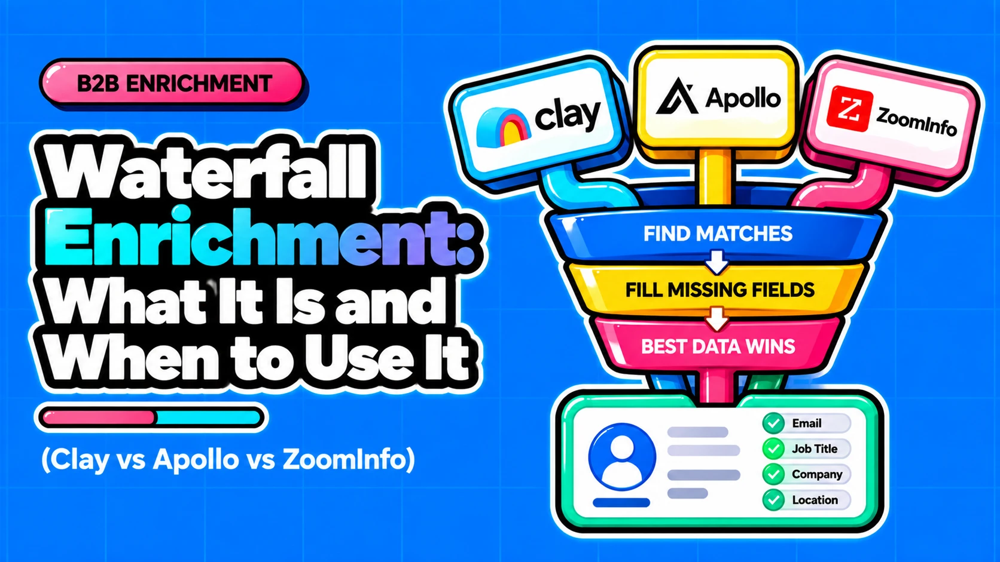

Waterfall Enrichment: What It Is and When to Use It (Clay vs Apollo vs ZoomInfo)

Direct answer: Waterfall enrichment queries several data providers in a defined order for the same field and stops once a valid result is found. Use it when one provider's miss rate on your actual list is the bottleneck. If one provider already clears roughly 80% on an easy list, a waterfall adds cost and complexity for a few points. Most statistics cited below are vendor-reported and are labelled that way.
- A waterfall raises coverage only: freshness, deliverability and correctness still depend on each provider's data and on your validation step.
- Control model is the decision axis: Clay lets you own order and stop rules, Apollo uses an admin lineup with its own data first, and ZoomInfo manages order for you.
- Test your miss rate first: run one sample through one provider, split it by segment, and add providers only where misses are the problem.
- Verify billing on misses: sources conflict on whether failed lookups are charged, so test a small batch before budgeting.
Questions this article answers
- What is waterfall enrichment and why is one provider not enough?
- How do Clay, Apollo and ZoomInfo each run a waterfall?
- How do Clay, Apollo and ZoomInfo compare on control, ordering and billing?
- Should a waterfall run sequentially or in parallel, and how many providers do you need?
- When is a waterfall worth it and when is one provider enough?
- What should you define and measure before building a waterfall?
- What does a waterfall not fix?
- How should you decide whether to build a waterfall?
- Plus 4 FAQs answered below
What is waterfall enrichment and why is one provider not enough?
A waterfall runs the same field lookup through several providers in a set order and stops at the first valid result, because no single provider covers a full B2B list.
In single-provider enrichment, one vendor's database answers the lookup and a miss stays a miss. In a waterfall, a miss passes to the next provider, and a validation step can check the result before the sequence stops (Clay Docs). Clay frames the underlying problem as a trade-off: one provider gives high quality on a fraction of the list, or broad coverage with values you cannot trust, and chaining providers is presented as removing that trade-off. That is Clay's marketing position, based on its own 2025 work-email benchmark (Clay).
Published coverage figures, all vendor-run or vendor-aggregated:
- Single provider: FullEnrich, Landbase, QuickEnrich and Unify GTM publish figures from 30% to 70% (Landbase, Yalc, Databar).
- Waterfall: the same sources report 80%+ or high eighties.
- Clay's benchmark: per Databar's summary of Clay's guide, no single provider cleared both 95% quality and 90% coverage, while a chain reached 94% usable coverage (Databar).
- Clay-cited customer: inbound coverage moved from 40% to 80% after switching from one provider to a waterfall, per the same summary.
The evidence supports the direction (more coverage), not any specific lift. Coverage also varies by region, which is why one provider can look fine on US data and weak elsewhere (Yalc).
How do Clay, Apollo and ZoomInfo each run a waterfall?
Clay lets you build and order the sequence, Apollo gives admins a default lineup with its own data first, and ZoomInfo fills gaps in parallel without exposing provider order.
The deciding question is who owns provider order and stop rules, because that determines maintenance work, cost visibility and how far you can tune for one segment. Two claims still circulating in comparison pages are out of date. Apollo does have a waterfall: its December 2025 release notes show it, so pages saying otherwise are outdated or wrong (Apollo release notes). And ZoomInfo is not simply single-source: per ZoomInfo, it queries its own database first, then fills gaps from third-party vendors in parallel (ZoomInfo Pipeline).
Clay: you control order. Pre-built waterfalls for work email and phone can be reordered, extended, trimmed or toggled per provider, and custom waterfalls can be saved as templates. If a provider finds a valid email, the process stops for that contact; otherwise Clay moves to the next provider (Clay Docs).
Apollo: an admin controls the lineup, and Apollo stays first. Waterfall became the default for finding emails and phones in December 2025: Apollo checks its own data, then fills gaps from selected third-party sources (Apollo release notes). An admin sets a global lineup with an optional validator, can remove third-party sources entirely, and users can switch the waterfall off per activity such as CSV import. Sources run top to bottom, and Apollo always stays first and cannot be moved (Apollo docs). Apollo reports about 5% more emails, 7% more phones and 45% fewer bounces, but no baseline or method is stated, so treat it as a vendor claim.
ZoomInfo: ZoomInfo controls order. GTM Studio Waterfall Enrichment was announced on 19 February 2026 (ZoomInfo press release). Per ZoomInfo, it fills missing email or mobile data from third-party vendors in parallel, returns the highest-confidence result through Intelligent Scoring, and attributes a source to each data point. ZoomInfo's own materials give different vendor counts and third-party sources date the launch differently, so we do not treat any single count or date as settled.
How do Clay, Apollo and ZoomInfo compare on control, ordering and billing?
Clay gives the most control and the most configuration work, Apollo a managed default with a fixed native-first order, and ZoomInfo the least visibility into order and scoring.
Billing is where the control models diverge most. Clay runs two meters: every enrichment consumes one Action plus variable Data Credits, and a fully enriched record typically costs 6 to 20 Data Credits depending on data types, own API keys and waterfall use (Clay Docs). Apollo ties credits to whichever source returns data and charges extra for a validator (Apollo docs). ZoomInfo says GTM Studio customers pay no extra credits, which is a vendor claim (ZoomInfo press release). Misses are the contested cell: Clay's FAQ says no-result steps are free, while community threads and third-party write-ups claim per-attempt charges (Cleanlist).
| Attribute | Clay | Apollo | ZoomInfo |
|---|---|---|---|
| Feature name | Waterfalls (pre-built and custom) | Waterfall Enrichment | GTM Studio Waterfall Enrichment |
| Availability | Live; current plans since 11 Mar 2026 | Default for emails and phones since Dec 2025 | Announced 19 Feb 2026; verify current status |
| Core capability | User-built sequential chain, saved as templates | Admin-set source lineup with optional validator | Parallel third-party gap-fill for email and mobile |
| Order control | You reorder, add, delete or toggle providers | Admin sets order; Apollo always first and fixed | Not exposed; no per-field provider ordering |
| Stop rule | Stops per contact at a valid email | Runs until a match is found; verify in-app | Returns highest-confidence result via Intelligent Scoring |
| Billing model | 1 Action plus Data Credits; own keys cost 1 Action only | Credits depend on returning source; validator costs extra | No extra credits for GTM Studio customers, per ZoomInfo |
| Billing on misses | No-result steps free per Clay FAQ; third-party reports dispute; test it | Not established in reviewed sources; test it | Varies by source; verify with ZoomInfo |
| Key limitation | Most configuration and maintenance work | Native source always first; cannot be moved | Scoring logic and vendor order not visible |
| Best-fit profile | Teams with RevOps capacity to own provider logic | Apollo admins who accept a native-first default | GTM Studio customers wanting managed gap-fill |
Clay plan structure from Cleanlist's pricing review; confirm on clay.com/pricing before budgeting. No independent head-to-head exists, so no row here supports a coverage or accuracy ranking.
Should a waterfall run sequentially or in parallel, and how many providers do you need?
Sequential first-match favours cost and control, while parallel scoring favours confidence per field and less order maintenance but is less transparent. Practitioners suggest starting with 2-3 providers.
ZoomInfo describes sequential waterfalls as slower and subject to first-match limitations, and parallel scoring as faster and free of double payment (ZoomInfo Pipeline). That is an argument for its own architecture, and we found no independent head-to-head. Clay and Apollo both run top to bottom, with Apollo's own data fixed first.
- Sequential first-match: each step runs only if the previous one missed. You see the logic and the spend, and you maintain the order.
- Parallel scored: vendors are queried together and the highest-confidence result wins. There is no order to maintain, but provider order and scoring are not exposed.
On count, Landbase suggests starting with 2-3 providers and adding more only for a measurable gain. Unify GTM's analysis, via Yalc, puts the practical optimum at 3-4: the second provider recovers roughly 15-25% of the first one's misses, the third 8-12% and the fourth 3-5%. Those figures rest on a secondary citation, so read them as a practitioner heuristic, not a proven curve.
Our rule of thumb for order:
- Put the most accurate or most relevant source for the target geography first.
- Put cheap steps before slow or expensive ones, with AI research last (Landbase).
- Treat the default order as a starting point and reorder from test-batch results; Clay's pre-built waterfall starts in an order optimised for coverage and can be changed (Clay Docs).
When is a waterfall worth it and when is one provider enough?
Use a waterfall when one provider's miss rate on your list is the bottleneck, typically outside US, tech and enterprise segments; about 80% from one provider is often enough.
The thresholds here are secondary-source heuristics, not universal rules. An easy list (US tech, large companies, recent LinkedIn activity) that one source already clears at about 80% gains only a few points from a second provider, at real cost (Databar). Landbase says a narrow, well-covered ICP can see 70%+ from one provider, with a waterfall adding about 10-15 points plus complexity. Coverage drops outside the core market, so running the same list filtered to US and non-US is a quick test of whether one vendor is enough (Yalc). Fields that do not change routing, action, prioritisation or reporting are not worth enriching at all (Talantir).
Run this decision sequence before building:
- Does the field change routing, action, prioritisation or reporting? If not, skip enrichment for it.
- What is the miss rate for one provider on a representative sample? If it already clears roughly 80% on an easy list and the misses do not hurt, stay with one provider.
- Where do the misses cluster? Split by US vs non-US, company size and role.
- Choose the build. Clustered misses call for a targeted waterfall that adds providers only for those segments. Misses spread across the list call for a full waterfall, starting with 2-3 providers.
What should you define and measure before building a waterfall?
Define the target field, a validated-result stop rule, a validation step and a test batch; then measure lift per provider, cost per valid record and bounce rate.
A waterfall has three cost layers: data credits, orchestration Actions or platform meters, and RevOps time to keep provider order and rules current. Clay does not list per-provider credit costs on its pricing page; they appear in-app, so cost per record must be measured on your own recipe. Cleanlist's conversion of Clay's 6-20 credit range to about $0.30-$1.00 per fully enriched contact in Data Credits, plus Actions, is a third-party estimate, not a Clay figure. Sources also conflict on billing for misses, so the test batch is both a quality gate and a billing check.
Pre-build checklist:
☐ Pick one target field and confirm it changes routing, action, prioritisation or reporting
☐ Write the stop rule: stop on a validated result, never on any non-empty value
☐ Add a validation step after the providers and decide what happens to results that fail it
☐ Set provider order by geography fit, with slow or expensive steps last
☐ Run a small test batch before scaling and record whether misses consume credits or Actions
☐ Gate CRM write-back so weak or unvalidated data never overwrites existing values
Measure the payoff with three numbers:
- Coverage lift per provider: the share of previously missed records each provider recovers.
- Cost per valid record: credits, Actions and maintenance time divided by validated results, not by non-empty results.
- Bounce rate: bounces on validated emails actually sent.
Log one row per provider in run order: records tried, valid results, credits or Actions consumed, and bounces from the first send.
What does a waterfall not fix?
A waterfall raises coverage only: each provider still ages data on its own schedule, found does not mean deliverable, and non-empty values can still be wrong.
Each underlying provider keeps its own re-verification schedule, so a found email can be stale and still needs validation (Talantir). The widely used decay benchmark is 2.1% a month, about 22.5% a year; ZoomInfo cites a 22.5-70% range because fields decay at different rates, and one vendor's weekly re-verification study claims about 67% a year, a single-vendor sample that is not consensus (Merit). Wrong-but-non-empty values are why the stop rule must key on validated results.
- Myth: A waterfall makes data more accurate. Reality: It primarily raises coverage; accuracy depends on validation and on stopping on validated results (Talantir).
- Myth: Failed lookups are always free. Reality: Clay says no-result steps cost nothing, but third-party write-ups report per-attempt charges (Clay Docs, Cleanlist).
Coverage, freshness, validation and governance are four separate layers, each needing its own control. A waterfall addresses only the first.
How should you decide whether to build a waterfall?
Test your single-provider miss rate by segment first, then choose the control model that matches who will maintain provider order, stop rules and write-back.
The control model is the decision axis: you own order in Clay, an admin owns a native-first lineup in Apollo, and ZoomInfo manages order for you (Clay Docs, Apollo docs, ZoomInfo Pipeline). If one provider already clears roughly 80% on an easy list, stay with it. If misses cluster in specific segments, add providers there and validate before anything reaches the CRM.
☐ Run one provider on a sample split by region, company size and role.
☐ If miss rate exceeds 20% in a segment, map which providers cover that segment best.
☐ Choose the control model by who will maintain provider order, stop rules and write-back.
☐ Test billing on misses before budgeting; do not assume the FAQ answer matches in-app behaviour.
Frequently asked questions
Does Apollo have waterfall enrichment?
Yes. Apollo made waterfall enrichment the default for finding emails and phone numbers in December 2025, checking its own data first and then selected third-party sources. Apollo reports about 5% more emails, 7% more phones and 45% fewer bounces, with no baseline stated. Comparison pages saying Apollo has no waterfall are outdated.
Is ZoomInfo a true waterfall?
It depends on the definition. Per ZoomInfo, GTM Studio queries its own database first, then fills gaps from third-party vendors in parallel and returns the highest-confidence result, rather than running sequential first-match. If you define a waterfall as ordered first-match, it is not one; if you define it as multi-provider gap-fill, it is. This is a vendor description.
Are failed lookups free in a waterfall?
It depends on the platform. Clay's FAQ says no-result steps are not charged, while community threads and third-party write-ups report per-attempt charges. Run a small test batch and compare consumption to results before budgeting.
Does a waterfall make enrichment data more accurate?
Not by itself. A waterfall mainly raises coverage. Accuracy depends on a validation step and a stop rule that requires a validated result, because non-empty values can still be wrong and each provider's data ages on its own schedule (Talantir).
Sources
- Waterfalls, Clay Docs
- Actions & Data Credits, Clay Docs
- The Complete Guide to Waterfall Enrichment (2026), Clay
- Use Waterfall Enrichment, Apollo Knowledge Base
- Release Notes 2025, Apollo Knowledge Base
- ZoomInfo's Waterfall Enrichment Eliminates Contact Data Gaps, ZoomInfo Newsroom
- Waterfall Enrichment: How It Works and When to Use It, ZoomInfo Pipeline
- How Waterfall Enrichment Works, Databar
- Clay Pricing 2026: Official Plans, Credits and Real Cost, Cleanlist
- The Apollo.io API: Rate Limits, Credit Burn, and What to Budget, Revenueflow
- Contact Enrichment Waterfall: How Modern Teams Stack Data Providers, Landbase
- Data Enrichment in 2026, Waterfall vs Single Vendor, Yalc
- Clay Waterfall Enrichment Strategy Explained, Talantir
- B2B Data Decay in 2026, Merit Data & Technology
Want help deciding provider order, stop rules and write-back architecture for your CRM?
Contact →